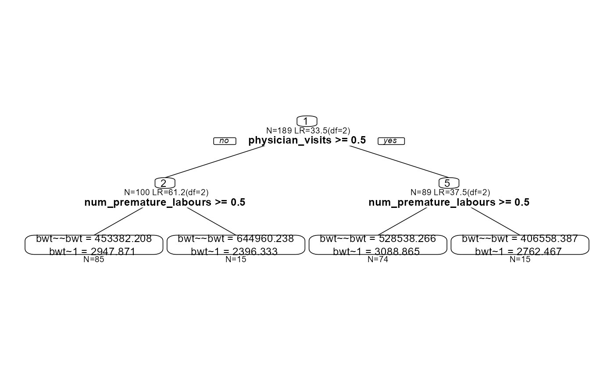

Structural equation model (SEM) trees combine SEM with decision-trees (a paradigm also known as recursive partitioning).
semtree(
model,
data = NULL,
control = NULL,
constraints = NULL,
predictors = NULL,
...
)A template model specification from OpenMx using
the mxModel function or a lavaan model
using the lavaan function with option do.fit=FALSE).
Model must be syntactically correct within the framework chosen, and
converge to a solution.
A data.frame used for growing the tree. The order
of manifest variables and predictors is not important when providing a
dataset to semtree. Use the argument 'predictors' to explicitly
specify which variables should be considered as split candidates.
A semtree_control object contains all hyper-parameters that govern the splitting procedure.
A semtree.constraints object setting model
parameters as constrained from the beginning of the semtree
computation. This includes the specification of focus parameters (i.e., parameter subsets that
exclusively go into the function evaluating splits). Also, options for
measurement invariance testing in trees are included.
A vector of variable names matching variable names in the data set. If NULL (default) all variables that are in data set and not part of the model are potential predictors.
Optional arguments.
A semtree object. This can be further examined with
summary, plot, and print.
Core idea: Instead of assuming that one SEM fits all individuals equally well, SEM Trees recursively split the sample into subgroups based on covariates (e.g., age, gender, SES) such that model parameters differ between subgroups. This results in a tree where each node contains an SEM, revealing heterogeneity in model structure or parameters across groups.
The package supports model specification in lavaan and OpenMx.
Calling semtree with an mxModel or
lavaan model fits the template model to the entire data set and
then recurses over the following steps until no further meaningful partition
into sub groups is found:
Fit the model on the current node's data and compute model fit.
For each predictor, find the split point that best
improves model fit – this is either done by likelihood ratio tests or
score-based tests as determined in the semtree.control.
Select the best-performing predictor/split combination unless
a stopping rule applies, e.g., split is not significant given a
significance criterion (alpha), there are too few observations in
a node (min.N, min.bucket, a maximum depth is reached, max.depth, or a
custom stopping rule applies.
Continue the procedure independently on each resulting sub group
Predictors can be categorical (ordered or unordered) or continuous. When using unordered categorical predictors with many levels, the number of candidate partitions grows quickly, so limiting the predictor set can reduce computation and the number of multiple comparisons.
Splitting quality can be evaluated with three built-in strategies:
1. "naive" selection compares all possible split values across all predictors and chooses the best overall improvement.
2. "fair" selection uses a two-step procedure at each node: a first phase on half the sample identifies the best split value per predictor, and a second phase on the remaining data picks the most promising predictor among those candidates.
3. "score" relies on score-based statistics that provide faster evaluations while retaining favorable statistical properties for detecting parameter instabilities.
All other parameters controlling the tree growing process are adjusted
in the semtree.control object.
In order to get robust estimates of the importance of predictors,
consider growing a semforest
Brandmaier, A.M., Oertzen, T. v., McArdle, J.J., & Lindenberger, U. (2013). Structural equation model trees. Psychological Methods, 18(1), 71-86.
Arnold, M., Voelkle, M. C., & Brandmaier, A. M. (2021). Score-guided structural equation model trees. Frontiers in Psychology, 11, Article 564403. https://doi.org/10.3389/fpsyg.2020.564403
semtree.control, summary.semtree,
parameters, se, prune.semtree,
subtree, OpenMx,
lavaan
{
model <- lavaan::lavaan("bwt~~bwt; bwt~1")
ctrl <- semtree_control(method="score",
max.depth = 2, alpha = 0.01)
bw <- with(MASS::birthwt, {
ui <- factor(ui, labels=c("no","yes"))
ht <- factor(ht, labels=c("no","yes"))
smoke <- factor(smoke, labels=c("no","yes"))
data.frame( bwt, uterine_irritability=ui,
hypertension=ht, smoke, num_premature_labours=ptl,
physician_visits=ftv )
})
tree <- semtree(model = model, data = bw, control = ctrl)
plot(tree)
}
#> ✖ Variable num_premature_labours is numeric but has only few unique values. Consider recoding as ordered factor.
#> ✖ Variable physician_visits is numeric but has only few unique values. Consider recoding as ordered factor.
#> ✔ Tree construction finished [took 2s].
